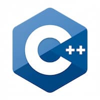

Python is one of the most popular programming languages in the world, known for its simple and readable syntax. It was designed to make writing code more convenient and accessible. For this reason, Python is often recommended as a first programming language for beginners. At the same time, it offers enough features to support the development of complex professional projects.
Python is used in many areas of information technology. Developers use it to build web applications, automate everyday tasks, process large amounts of information, and create solutions based on artificial intelligence and machine learning. The language is also widely used in scientific research, software testing, and the development of tools for programmers.
One of Python's main advantages is its extensive collection of libraries and frameworks. For example, Django and Flask are used for web development, while NumPy and Pandas help developers work with data. Thanks to its active community, Python continues to evolve and remains a valuable language for education, research, and commercial software development.
C++

C++ is a powerful general-purpose programming language known for its high performance and extensive capabilities. It was developed as an extension of the C language and introduced additional tools for organizing code, including support for object-oriented programming. C++ allows developers to manage memory and other computer resources efficiently, which is particularly important when building complex and demanding software.
The language is widely used in video game development, operating systems, graphics applications, web browsers, and software for embedded devices. Its execution speed makes C++ suitable for projects where performance and efficient interaction with hardware are essential. It is also used in financial systems, simulations, and software designed for scientific computing.
Learning C++ requires attention to detail because the language gives programmers significant control over how their applications operate. Important concepts include data types, pointers, memory management, classes, and templates. Although it can be challenging to learn, C++ provides a strong foundation in programming and remains an important tool for developing high-performance systems.
HTML
HTML is a markup language used to create the structure of web pages. Its name stands for HyperText Markup Language. With HTML, developers define which elements appear on a page, including headings, paragraphs, images, links, lists, tables, and forms. Each element is described using special tags that help a web browser display the content correctly.
HTML is the foundation of almost every modern website. It organizes information and establishes a logical page structure, making content easier for users to understand and for search engines to analyze. Semantic elements such as header, nav, main, section, and footer describe the purpose of different parts of a document and make its structure more meaningful.
However, HTML is not designed to handle complete visual styling or complex application logic on its own. CSS is usually used to control colors, sizes, spacing, and layouts, while JavaScript adds interactivity. Learning HTML is one of the first steps in web development because it provides the foundation on which other website technologies are built.
CSS
CSS stands for Cascading Style Sheets and is used to style web pages. While HTML defines the structure and content of a website, CSS determines how those elements look. Developers use it to control colors, fonts, text sizes, background images, spacing, borders, and the positioning of elements across a page.
CSS makes it possible to create modern and user-friendly interfaces that adapt to different devices. With Flexbox and CSS Grid, developers can organize elements into rows, columns, and complex layouts. Media queries allow styles to change according to screen size, helping websites display correctly on computers, tablets, and smartphones.
Beyond basic styling, CSS supports animations, smooth transitions, hover effects, and many other visual features. It plays an important role in user experience because thoughtful design helps visitors find and understand information more easily. Combined with HTML, CSS enables developers to build attractive, accessible, and responsive websites.
Java
Java is a general-purpose, object-oriented programming language widely used to build reliable and scalable applications. One of its key principles is "Write Once, Run Anywhere," meaning that a program can run on different platforms when a suitable Java Virtual Machine is available. This is made possible by the JVM, which executes Java bytecode.
Java is commonly used in enterprise software, server-side applications, banking systems, web services, and business platforms. It is also used to develop Android applications, although Kotlin is now widely used in this area as well. Java is particularly useful for large projects where reliability, code maintainability, and the ability to scale as the number of users grows are important.
The language has a mature ecosystem of libraries, development tools, and frameworks. For example, Spring is widely used to build server-side applications and APIs. Java also provides features for working with multithreading, databases, and networking technologies. These capabilities help Java remain relevant in professional software development and make it suitable for long-term software solutions.
R
R is a programming language and software environment primarily designed for statistical computing, data analysis, and visualization. It provides a wide range of tools for processing information, performing mathematical operations, creating charts, and conducting statistical research. R is particularly popular in scientific communities, where researchers need to analyze experimental results and identify patterns in large datasets.
One of R's main advantages is its extensive collection of specialized packages. For example, ggplot2 is used to create charts and data visualizations, while dplyr helps users filter, transform, and analyze tables. These tools allow researchers and analysts to work with information efficiently, perform complex calculations, and present their findings in a clear and visual format.
R is used in biostatistics, economics, finance, medicine, social sciences, and machine learning. It is suitable for investigating relationships between variables, testing statistical hypotheses, and building data-driven models. Although R is not the ideal choice for every type of software development, it remains an important tool for professionals working in statistics and data analytics.